在酒店房間稍微休息一會, 便匆匆走到濟州港旅客碼頭, 打算預先購買後天 13:40 往木浦的船票, 怎料購票處 一片昏暗, 原來已經過了營業時間。唉! 花了差不多一小時走到來這裡, 結果白走一趟! 沒辦法, 唯有明天再來吧! 看看手錶, 約下午六時四十五分, 是時候吃晚飯了, 計劃是往濟州東門市場 Gate 12 出入口對面的餐廳吃人參雞湯。記得約四十年前第一次來韓國自助遊, 大街小巷都是人參雞湯店, 世易時移, 現在應該不多了。的確, 整個二十二天的旅程都找不到一間「人參雞湯專門店」。
接著循原路走, 同樣地驚險走過汽車高速飛馳的馬路, 穿過山地川, 小河兩岸已經燈火通明了。
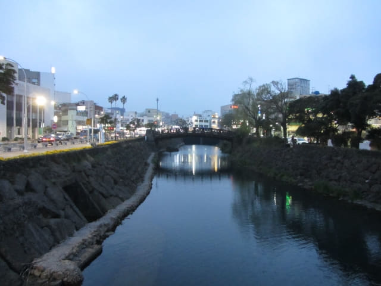
濟州島阿姨家 (제주이모집)人參雞湯晚餐
在山地川廣場橫過馬路, 穿過濟州東門市場, 便來到濟州島阿姨家餐廳。
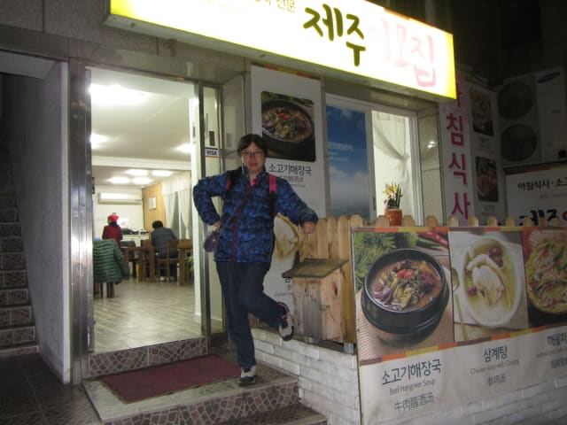
我們每人叫了一客參雞湯, 每位是15,000韓元。
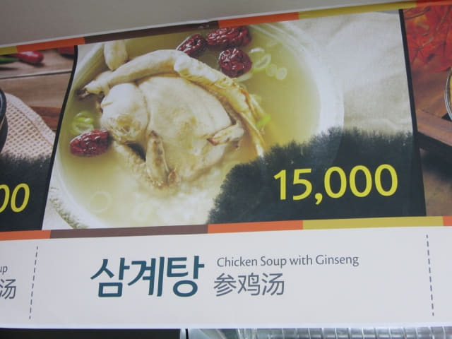
都是韓國家庭式的餐館。
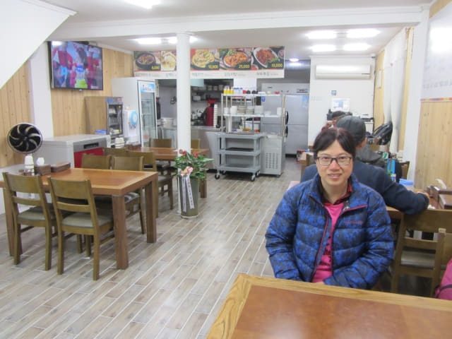
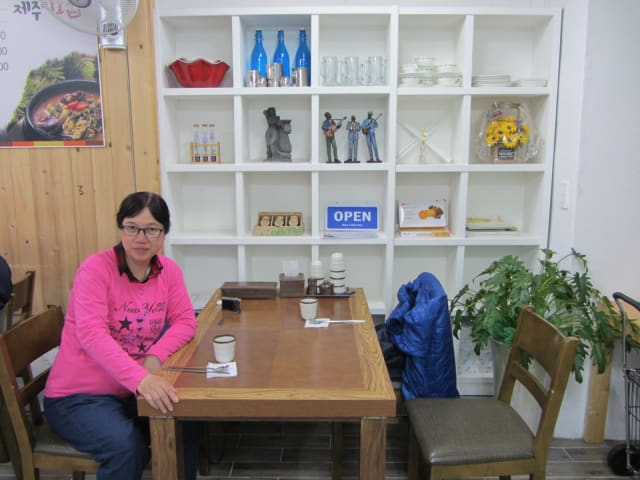
等了十多分鐘, 我們期望已久的參雞湯晚餐送來了。
吃了幾口, 非常失望! 完全不是我們以往在韓國吃到的參雞湯的風味: 碗中不是原隻的嫩雞, 只是幾塊雞肉而已; 而人參只是一小條的參鬚, 沒有參味; 以往會在雞腹中塞滿糯米, 可以吃得飽飽的, 這裡卻只有少許糯米在碗中飄浮。如果是 5,000 韓元, 倒還可以勉強接受。
經此一役, 得到的教訓是: 以後只光顧參雞湯專門店!
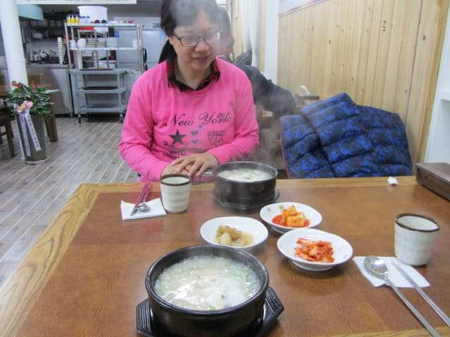
夜遊濟州東門市場
吃完所謂參雞湯晚餐, 感覺肚子仍然是空空的, 便打算到濟州東門市場逛逛, 看看有什麼小吃, 但發覺價錢一點也不便宜。剛才的參雞湯晚餐已經超出預算, 不想再花太多錢在小吃上, 最後決定在經過的便利店買碗麵返回酒店吃。
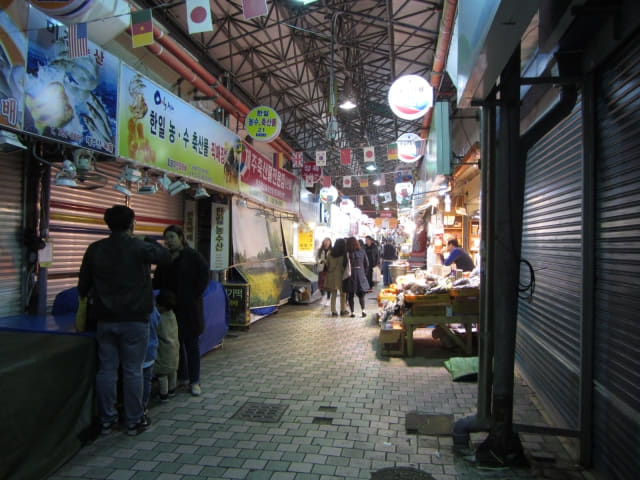
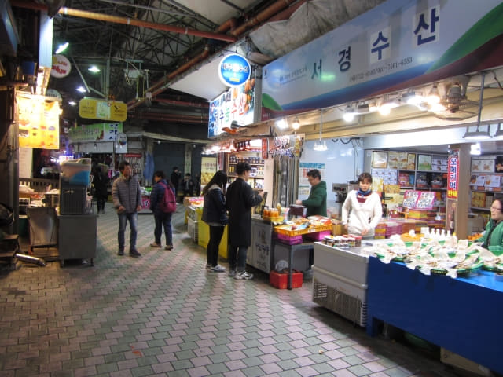
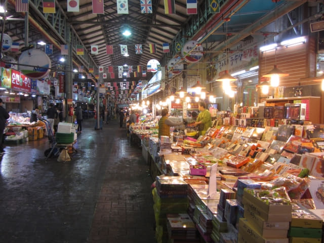
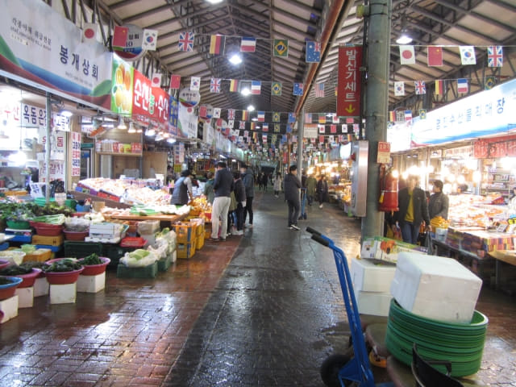
濟州市中央地下商店街買了兩個碗麵夜宵
離開濟州東門市場, 沿大街朝酒店的方向一直走, 很難相信, 沿途竟然一間便利店也沒有, 從6號口走下中央地下商店街, 差不多返回酒店了, 正打算放棄之際, 商店街內有一間好像雜貨店的店舖, 貨架上擺放了十多個碗麵, 最後買了兩個碗麵, 每個是 1,150韓元。
濟州市中央地下商店街內有免費冷熱水供應。因為香港商場沒有這些免費服務的, 難免每次看到不期然有些大驚小怪。
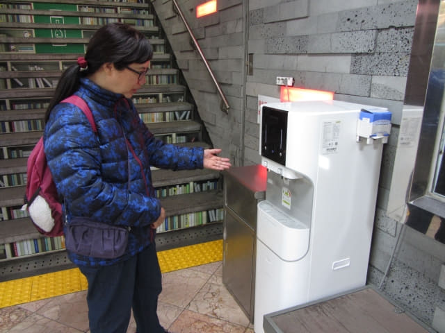
好像書架的樓梯, 而且燈光會不停轉變的。
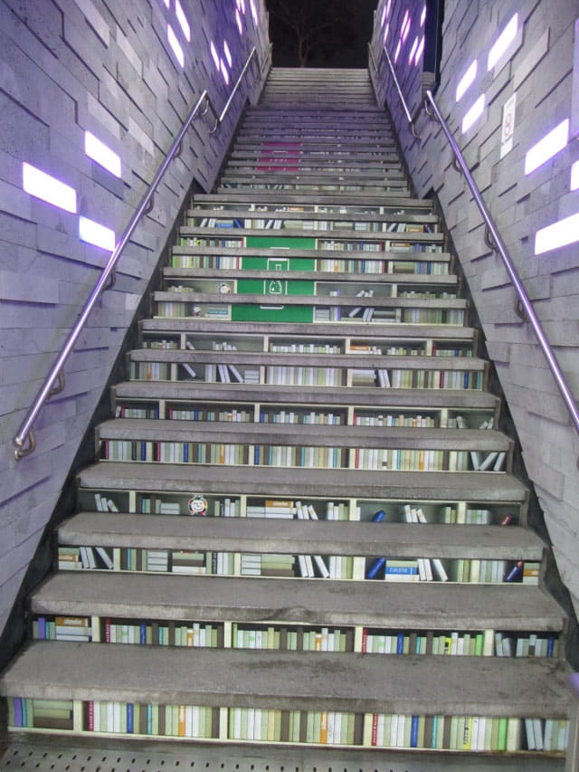
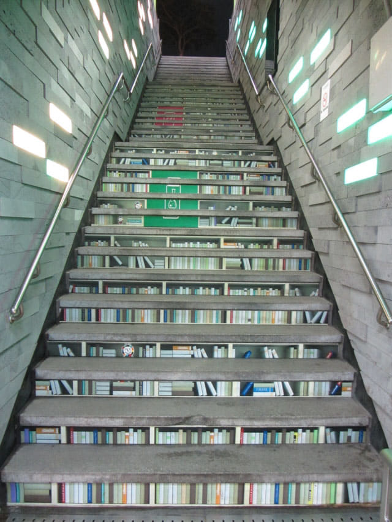
沿12號出口的樓梯走上街道。
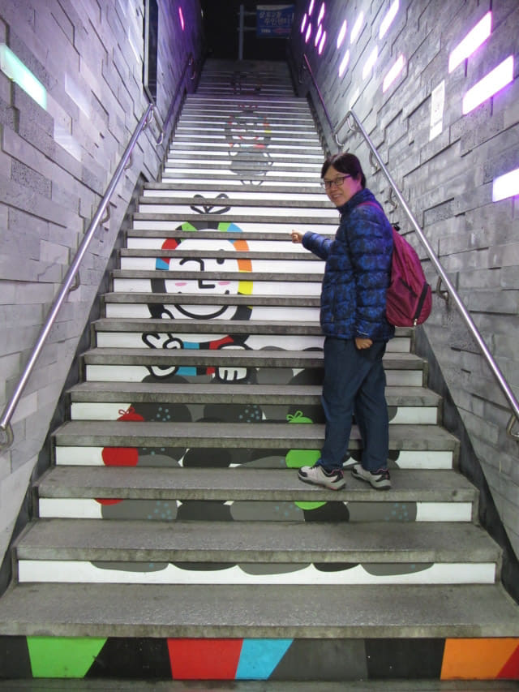
拐個彎, 便看到我們下榻的濟州島羅波羅酒店, 在晚間顯得分外高級。
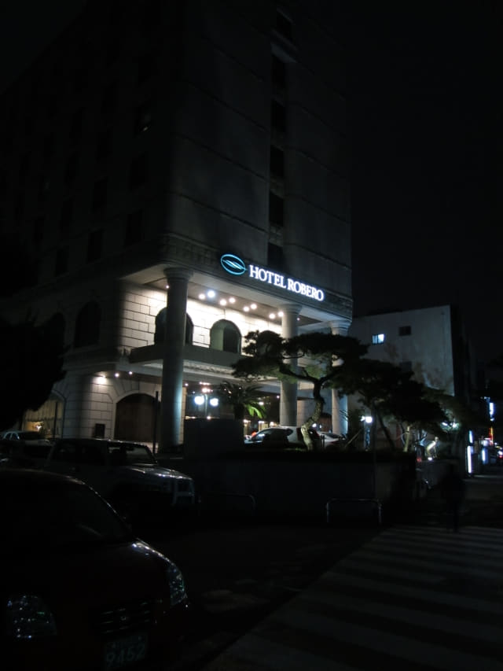
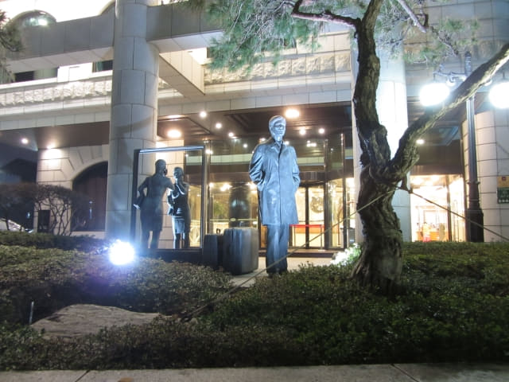
回到酒店大堂, 已經是晚上八時四十分。
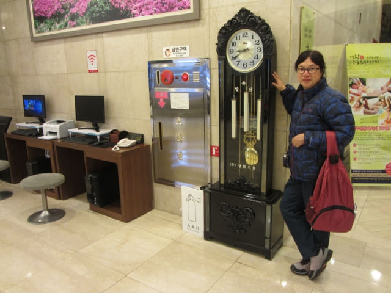
乘電梯往16F房間, 吃了剛剛買的碗麵, 匆匆寫了今天的日記, 休息了一會, 洗澡, 睡覺, 就這樣結束了在濟州島的第七天行程。